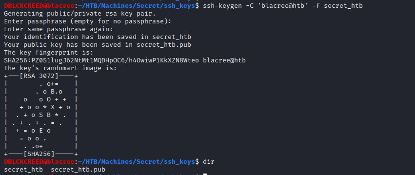

Home
HTB - SECRET
SECRET has running a web application with an hidden api endpoint that is vulnerable to RCE due to it's improper validation of user input as it is exploited to get a shell. SECRET also contains a binary which has it's SUID bit set; this binary is then exploited for Privilege Escalation.
Scanning and Enumeration
Starting with an NMAP scan, we have...nmap -sC -sV --min-rate=1000 $Secret
Starting Nmap 7.92 ( https://nmap.org ) at 2022-01-14 08:33 WAT
Stats: 0:00:02 elapsed; 0 hosts completed (1 up), 1 undergoing SYN Stealth Scan
SYN Stealth Scan Timing: About 70.65% done; ETC: 08:33 (0:00:00 remaining)
Stats: 0:00:08 elapsed; 0 hosts completed (1 up), 1 undergoing Service Scan
Service scan Timing: About 33.33% done; ETC: 08:33 (0:00:02 remaining)
Stats: 0:00:14 elapsed; 0 hosts completed (1 up), 1 undergoing Service Scan
Service scan Timing: About 33.33% done; ETC: 08:34 (0:00:14 remaining)
Nmap scan report for 10.10.11.120
Host is up (0.49s latency).
Not shown: 997 closed tcp ports (reset)
PORT STATE SERVICE VERSION
22/tcp open ssh OpenSSH 8.2p1 Ubuntu 4ubuntu0.3 (Ubuntu Linux; protocol 2.0)
| ssh-hostkey:
| 3072 97:af:61:44:10:89:b9:53:f0:80:3f:d7:19:b1:e2:9c (RSA)
| 256 95:ed:65:8d:cd:08:2b:55:dd:17:51:31:1e:3e:18:12 (ECDSA)
|_ 256 33:7b:c1:71:d3:33:0f:92:4e:83:5a:1f:52:02:93:5e (ED25519)
80/tcp open http nginx 1.18.0 (Ubuntu)
|_http-server-header: nginx/1.18.0 (Ubuntu)
|_http-title: DUMB Docs
3000/tcp open http Node.js (Express middleware)
|_http-title: DUMB Docs
Service Info: OS: Linux; CPE: cpe:/o:linux:linux_kernelWeb Server - TCP 80
 Looking through the site we find...
This page contains documentation on how to interact with the second web server running on port 3000 which appears to be an API. We have
Looking through the site we find...
This page contains documentation on how to interact with the second web server running on port 3000 which appears to be an API. We havehttp://localhost:3000/api/user/register -- For registering a userhttp://localhost:3000/api/user/login -- For log inhttp://localhost:3000/api/priv -- To confirm the privilege and validity of your auth-tokenYou'll also find the link
http://secret.htb/download/files.zip. A downloadable zip file that contains the source code of the web application.
Let's interact with the second webserver and see what we can find...Web Server (API) - TCP 3000
Let's register a user, we'll use a python script to interact with the endpoints on the api. This is preferable because it makes it easier as it automates the process for us. For the registeration endpoint, create a python script with the following information... What this script does is that it tries to create a normal user called "blacree" and then an admin user called "theadmin" which is the username of the admin user of the application as shown to us in the documentation. The result is... We are able to create a regular user with the information provided, but we cannot create an admin user because it already exists. Let's login, use the python script below to login... What this does is that it logins with the user we created, if the login is successful we receive a JWT auth-token; we then verify the privilege of our token using the/api/priv
endpoint. The result is...
The login was successful, and we are able to verify using our auth-token that we are a normal user. Although we are able to interact with the api endpoints, we stil do not have a solid
exploitable foothold on the machine.Next let's check the source code we downloaded. Looking through it's contents, two things can be found. The first is a JWT_TOKEN SECRET contained in the
.env file; but first you
have to revert the git repo to a previous commit called "added /downloads". The Token SECRET can be used to sign and create legitimate tokens for the web application.
The second thing is contained in the routes folder in a file called
private.js which contains the following code...
This tells us that there is an hidden api called /api/logs which takes a query parameter called "file" that is used in an execution to retrieve git information about the file.If there is an improper input validation of the query parameter used to interact with this endpoint it would be possible to perform RCE using this endpoint. But if you look carefully at the code, only an admin can make use of this endpioint to perform an execution. We need to get an admin auth-token before we can make use of this endpoint. Since we have the JWT_TOKEN SECRET we can make a admin auth-token.
To create a JWT token we can use a site called
jwt.io using it's Debugger. In the Encoded box put in your normal user token so that we can view the contents contained in it's payload. Create a payload
with the same information but change the "name" value to "theadmin". It is best you don't edit the payload contents of your token as you'll be working on an already generated token. A way you can go about this is to
copy your payload, clear the contents of the Encoded box, then paste back the payload and edit it. Finally we need to sign the generated token, paste your JWT_TOKEN SECRET into the Verify Signature box.
The result should look like this...
You can verify the validity of your token using the check_privilege python function we created. You should have...
Now let's test the hidden endpoint.RCE Through Hidden Endpoint
As we did with all the other endpoints let's create a python script that would help us interact with this one... To get the user FLAG change theCOMMAND in the url to...whoami -- To get the current user, andcat /home/[user]/user.txt -- To view the user flagNow, let's get a shell, we know from the "whoami" command that the user running the application is called
dasith; which is great news as this user is a real user.
Since we have an SSH server running, we should be able to make use of SSH to get a shell. All we need to do is generate our ssh keys
and paste the public key into the authorized_keys file of the user. Generate SSH keys with the command...

Always create separate SSH keys for live engagements, do not use those meant for your machine.To copy our public key to the authorized_keys file our URL should look like this...
http://10.10.11.120:3000/api/logs?file=local-web;echo [public_key] >> /home/dasith/.ssh/authorized_keysCURL utility to copy it. We can then SSH into the machine...

 We got a shell 😁
We got a shell 😁Privilege Escalation
As usual the first thing to check is for executables that have their SUID bit set... As you can see above there is an unusal executable calledcount. After executing it, we have...
What it does is that, it takes any file on the system and calculates the total characters, words and lines contained in the file and then asks to save the result in a file of your choice.
But it only save the result and not the actual file contents. Since the contents of the file is read into memory, it is might be possible to crash the program, and cause a dump of it's memory into a file.
To do that follow the following commands...
What happend here is that we executed the file, read the content of the ROOT flag and sent the execution to the background. We then used the ps to obtain the Process-id of the execution so that we can
kill it. Killing it resulted in it's memory being dumped.Now to access the contents of the dumped memory we have to go to the
/var/crash folder. You should see a file with an extension of ".crash" and in it's name the name of the executable should be present. Next we have to extract
the fields of the report to separate files. This can be done using apport-unpack...
Our major concern in the generated files is the CoreDump file as asides other things, it contains the memory contents of an application upon crashing. Since it is a binary, we can view the content we want using the strings utility...
dasith@secret:/tmp/count_crash$ strings ./CoreDumpAlthough, we have successful gotten the hash for both USER and ROOT, we haven't gotten a root shell yet, and our exploitation is not over. Since we can use the
count utility to access any file, it means we can access the root user's SSH private key. Perform the same crash and dump operation but this time access the root user's private key...
Unapcking and viewing the contents of the CoreDump like we did earlier on we should have the root's private key...
Copy it to your machine and try to make a connection to SECRET using the private key...
SUCCESS, we now have a root shell.Thank you for reading my writeup 😀 | Home